With this window the simulator is operated. Figure  shows this window. Table
shows this window. Table  lists all the input
options with types and value ranges. The meaning of the 5 learning
parameters depends upon the learning function selected with the menu
select learning function invoked by the button
lists all the input
options with types and value ranges. The meaning of the 5 learning
parameters depends upon the learning function selected with the menu
select learning function invoked by the button
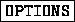
of the control panel.
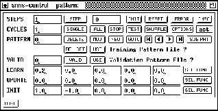
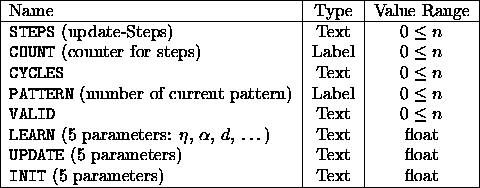
There are the following text fields, buttons and menu buttons:
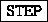
: After clicking this button, the simulator kernel executes the number of steps specified in the text field STEPS. If STEPS is zero, the units are only redrawn. The update mode selected with the button is used (see chapter
 : The counter is reset and the units are
assigned their initial activation.
: The counter is reset and the units are
assigned their initial activation.
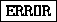
: By pressing the error button in the control panel, SNNS will print out several statistics. The formulas were contributed by Warren Sarle from the SAS institute. Note that these criteria are for linear models; they can sometimes be applied directly to nonlinear models if the sample size is large. A recommended reference for linear model selection criteria is [JGHL80].
Notation:
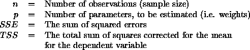
Criteria for adequacy of the estimated model in the sample
Pearson's
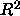
, the proportion of variance, is explained or accounted by the model: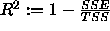
Criteria for adequacy of the true model in the population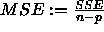
, the root mean square error as: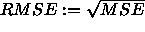
.The
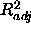
, the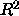
[JGHL80] adjusted for degrees of freedom, is defined as: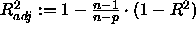
Criteria for adequacy of the estimated model in the population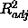
: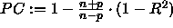
The estimated mean square error of prediction (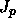
) assuming that the values of the regressors are fixed and that the model is correct is: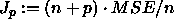
The conservative mean square error in prediction [Weh94] is: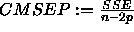
The generalized cross validation (GCV) is given by Wahba [GHW79] as: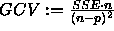
The estimated mean square error of prediction assuming that both independent and dependent variables are multivariate normal is defined as: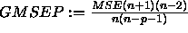
Shibata's criterion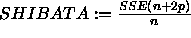
can be found in [Shi68].
Finally, there is Akaikes information criterion [JGHL80]:
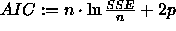
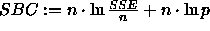
.Obviously, most of these selection criteria do only make sense, if n>>p.
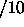
cycles, i.e. independent of the number of training cycles only 10 numbers are generated. (This prevents flooding the user with network performance data and slowing down the training by file I/O).The error reported in the text window is the sum of the quadratic differences between the teaching input and the real output over all output units. The average error per output unit is given behind ave.
The error reported in the text window is the sum of the quadratic difference between the teaching input and the real output over all output units summed over the number of patterns presented. The average error per output unit is given behind ave.
 : Stops the teaching cycle. After completion of
the current step or teaching cycle, the simulation is halted
immediately.
: Stops the teaching cycle. After completion of
the current step or teaching cycle, the simulation is halted
immediately.
 ). Then the number of update steps
specified in STEPS are executed.
). Then the number of update steps
specified in STEPS are executed.
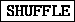
: It is important for optimal learning that the various patterns are presented in different order in the different cycles. A random sequence of patterns is created automatically, if SHUFFLE is switched on.
 : Offers the following menu:
: Offers the following menu:
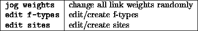
If jog weights is selected, a popup window appears to specify the value range ( low limit .. high limit) of the random noise to be added to all links in the network.
 . The following table gives the three
possible alternatives:
. The following table gives the three
possible alternatives:
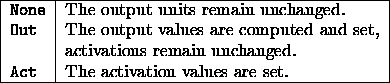
The label of this button always displays the item selected from the menu.
 : The pattern whose number is displayed in the
text field PATTERN is deleted from the pattern file.
: The pattern whose number is displayed in the
text field PATTERN is deleted from the pattern file.
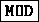
: The pattern whose number is displayed in the text field PATTERN is modified in place.The current activation of the input units and the current output values of output units of the network loaded make up the input and output pattern. These values might have been set with the network editor and the Info panel before.
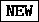
: A new pattern is defined that is added behind existing patterns. Input and output values are defined as above. This button is disabled whenever the current pattern set has variable dimensions.
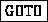
: The simulator advances to the pattern whose number is displayed in the text field PATTERN.
 no update steps are performed here.
no update steps are performed here.
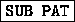
: Opens the panel for sub-pattern handling. The button is inactive when the current pattern set has no variable dimensions. The sub-pattern panel is described in section
 : in the LEARN row invokes a menu to select
a learning function (learning procedure). The following learning
functions are currently implemented:
: in the LEARN row invokes a menu to select
a learning function (learning procedure). The following learning
functions are currently implemented:
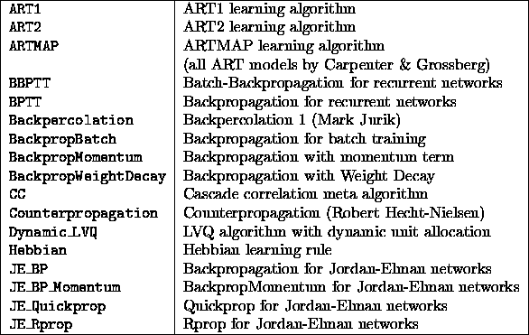
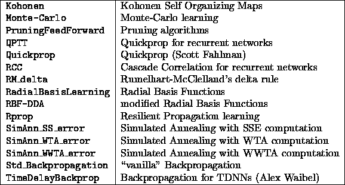
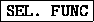
: in the UPDATE row invokes a menu to select an update function. A list of the update functions that are already built in into SNNS and their descriptions is given in section
 : in the INIT row invokes a menu to select
an initialization function. See section
: in the INIT row invokes a menu to select
an initialization function. See section